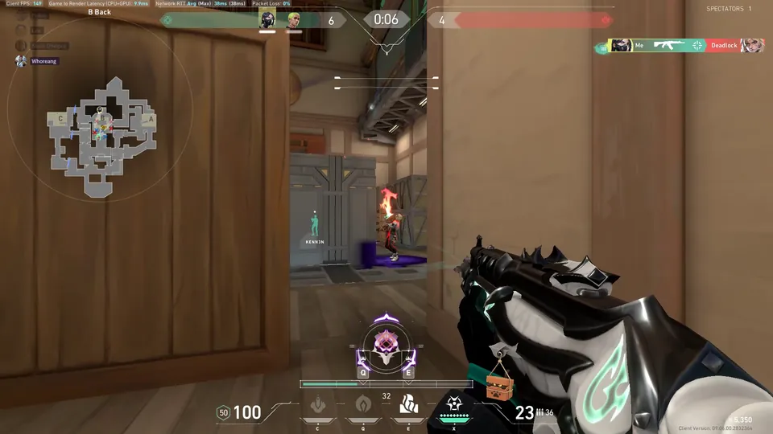

Free play · Open source · Windows 10/11
One key saves the last 2 minutes.
ClipVault is a free, open-source game clipping app for Windows 10 and 11. It keeps a replay buffer running while you play. Press your save hotkey and the last 2 minutes are saved as an MP4, with game audio and your mic on separate tracks.
Version 1.7.6 · ClipVault-Setup-1.7.6.exe · Windows 10/11 x64 · GPL-2.0-or-later
Silent 12-second loop: a VALORANT round is won, the save hotkey is pressed, Windows shows a Clip Saved notification, the clip appears at the top of the ClipVault library, then it is trimmed and exported.
Press save to continue
Try the SAVE button. On this page it only plays a demo animation; in the app, your hotkey saves a real clip.
- Default buffer
- 2:00
- Audio tracks
- 2
- Max fps
- 144
- Export target
- 10 MB
- Windows
- 10/11
- Version
- 1.7.6
Stage 1 · The library
High scores
Real clips from the developer's library, newest first, the way ClipVault lists them. Every file name holds the date, the time and the game.
| Rank | Game / file name | Length | Size |
|---|---|---|---|
| 1st | VALORANT2026-09-28_23-30-00_ |
2:02 | 215.34 MB |
| 2nd | TEKKEN 8 Fav2026-09-28_02-41-39_ |
2:59 | 779.86 MB |
| 3rd | League of Legends2026-09-27_21-41-34_ |
2:58 | 397.6 MB |
| 4th | VALORANT2026-09-27_03-47-16_ |
2:58 | 253.53 MB |
| 5th | TEKKEN 82026-09-27_00-53-13_ |
1:58 | 557.98 MB |
| 6th | League of Legends Fav2026-09-26_01-58-50_ |
2:58 | 377.85 MB |
| 7th | Counter-Strike 22026-09-25_22-34-47_ |
2:58 | 279.14 MB |
| 8th | VALORANT Fav2026-09-25_00-58-25_ |
3:00 | 362.22 MB |
8 of 24 clips shown. 2:00 is the default buffer length; you can change it in Settings.


Stage 2 · Controls
How to play
Three steps. Set it up once with the first-run setup (clips folder, capture, audio, hotkey), then it stays out of the way.
-

Step 1
Play
ClipVault runs in the tray and keeps the last 2 minutes in a replay buffer while you play. It can start with Windows.
-

Step 2
Press your hotkey
One key, set in the first-run setup. It works while a fullscreen game has focus. The last 2 minutes are saved as an MP4, Windows shows a Clip Saved notification, and the clip is already in your library.
-

Step 3
Trim & export
Open the clip, drag the trim handles, pick Up to 10 MB and export. Then drag the file anywhere, copy its path or open its folder.
Stage 3 · Features
Power-ups
What you get in ClipVault 1.7.6.
Recording
1P / 2P audio
Game and desktop audio record to one track, your microphone to another. In the editor, turn either one off or change its volume before you export.
Library
Hover preview
Point at a clip and it plays right in the grid. Grid or list view, search, and sort by date, size, name or favorite.
Library
Filter by game
Detected games are tagged automatically. Filter the library by game, tag or favorites.
Library
Bulk actions
Select several clips to favorite, tag, add or remove a game, export or delete them together.
Editor
Trim
Drag the trim handles and playback stays inside them. Frame-step and 5-second skips help you place the cut. Trim Original trims the file in place.
Export
Under 10 MB
Export with a size target: up to 10 MB for Discord, 50 MB, 100 MB, or keep the original. Optional 30/60 fps and 720p/1080p.
Encoder
NVENC / x264
NVENC on NVIDIA GPUs for the lowest CPU use, x264 on the CPU as a fallback. Auto picks one. Record at 30, 60, 120 or 144 fps.
Encoder
AV1
Record and export in H.264 or AV1. AV1 gives better quality per MB and needs an NVIDIA RTX 40-series or newer GPU.
Stage 4 · Tour
Demo
A 50-second tour with captions: saving a clip, the library, the editor, audio tracks, export and capture settings.
Stage 5 · Capture & privacy
House rules
-
Monitor capture
By default ClipVault records your monitor through DXGI. No game hooks, no injection, which keeps it anti-cheat friendly.
-
Game-only is experimental
“Games automatically” records supported games only and follows the active game. It and “Monitor + automatic games” are experimental. You can also pick one app window.
-
Clips stay on your PC
Clips are ordinary MP4 files in a folder you choose. No account. Nothing is uploaded.
-
Free play
Free and open source under GPL-2.0-or-later. Built on libobs, the engine from OBS Studio.

Stage 6 · Help
FAQ
Does the hotkey work in fullscreen games?
Yes. The save hotkey uses a low-level keyboard hook, so it works while a fullscreen game has focus. It is F9 by default, changeable in Settings.
Can I save more or less than 2 minutes?
Yes. 2 minutes is the default buffer length. You can change it in Settings.
Do I need an NVIDIA GPU?
No. On Auto, ClipVault uses NVENC on an NVIDIA GPU and falls back to x264 on the CPU. AV1 needs an NVIDIA RTX 40-series or newer GPU.
Does it touch the game process?
Not in the default mode. Monitor capture records the screen through DXGI with no game hooks or injection. The automatic game modes are experimental.
Where do my clips go?
Into a folder you choose, as normal MP4 files. There is no account and nothing is uploaded.
Does it run on macOS or Linux?
No. ClipVault is for Windows 10 and 11 (x64).
What does it cost?
Nothing. ClipVault is free and open source under GPL-2.0-or-later.
Continue?
ClipVault 1.7.6 for Windows 10 and 11. Free, open source, no account.
ClipVault-Setup-1.7.6.exe · Windows 10/11 x64 · GPL-2.0-or-later